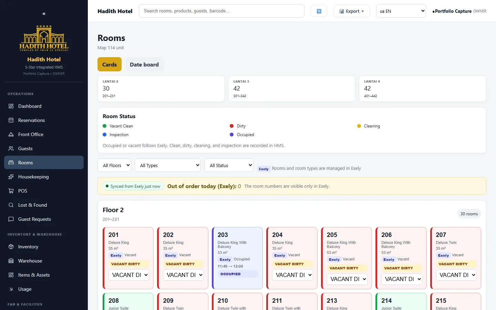
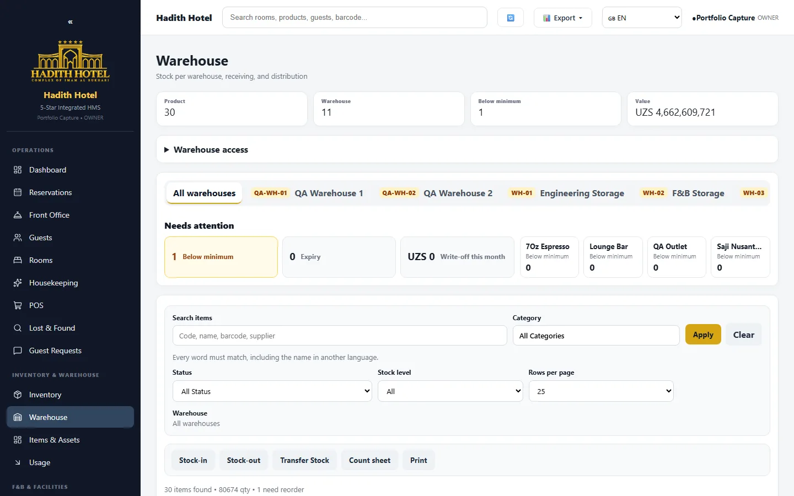
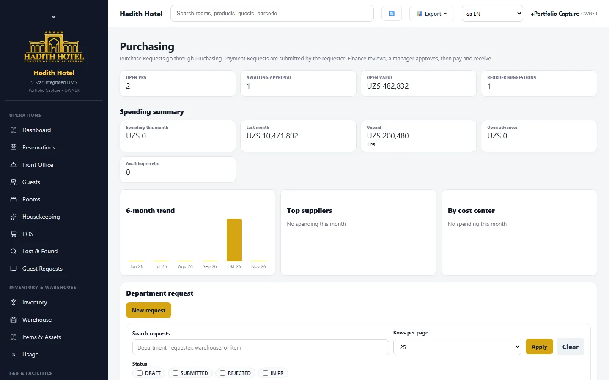
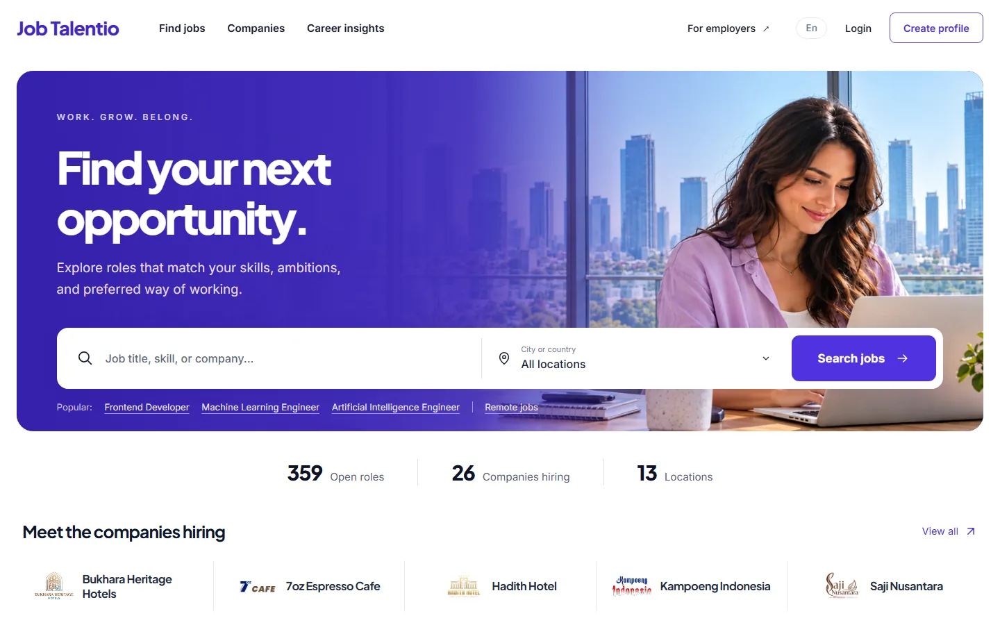
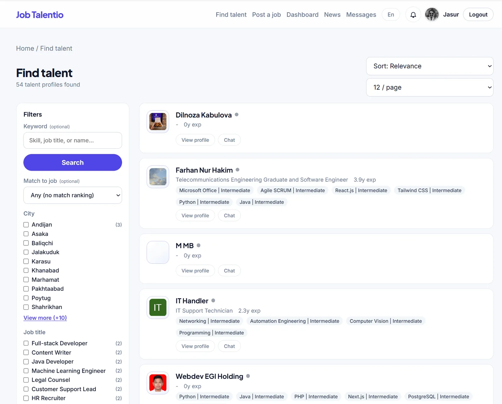
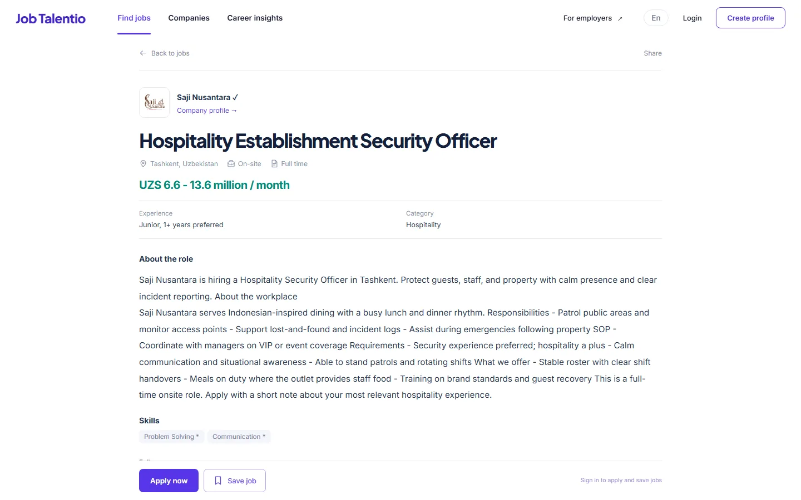
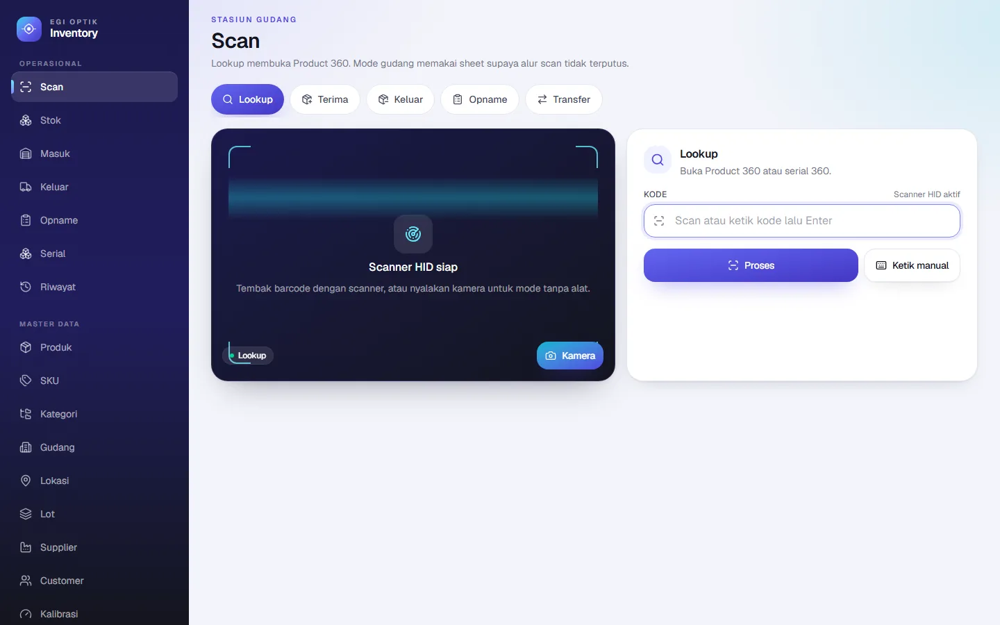
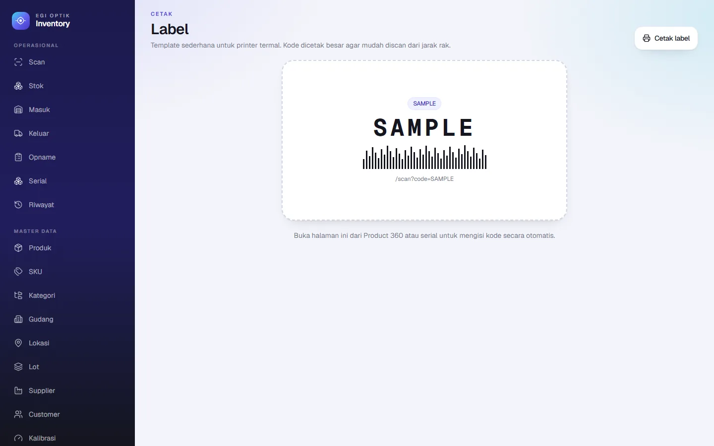
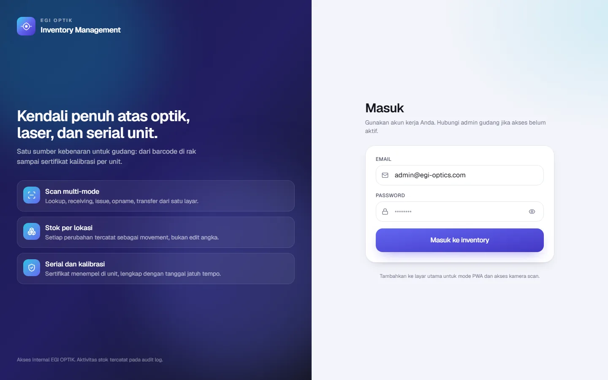
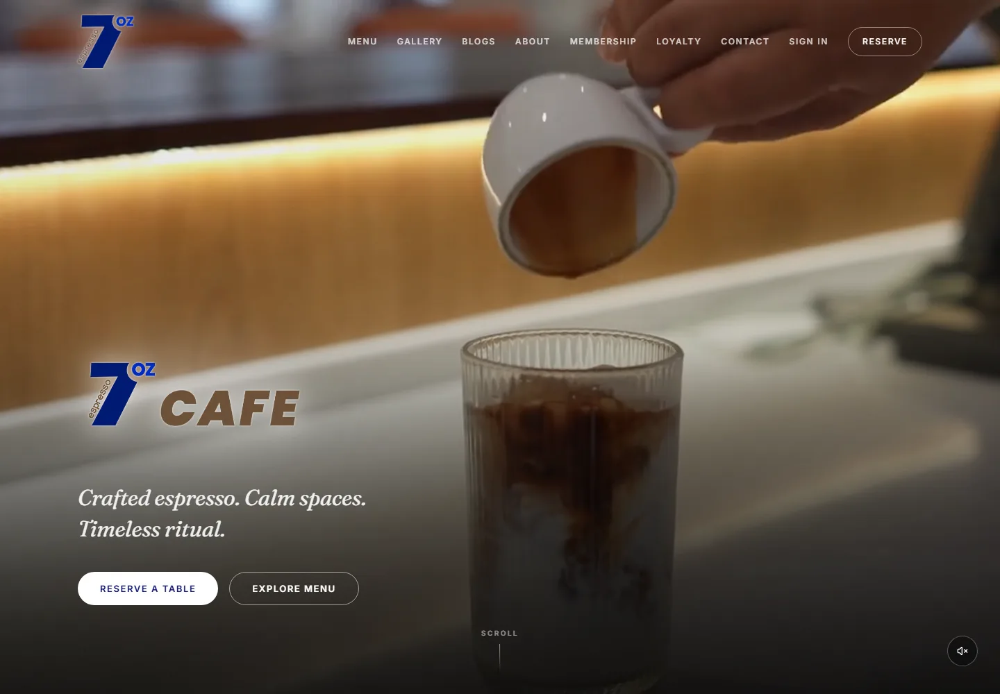

Portfolio · 2026
Fullstack Web Developer & Backend Engineer
Software engineer building operational web systems for a holding group and its subsidiaries — hotel operations, inventory ledgers, hiring platforms, and the servers they run on.
01 · Profile
I build the systems that sit behind a business: booking and housekeeping flows, stock ledgers that cannot silently drift, purchasing approvals, barcode receiving, hiring pipelines. Most of my work is judged by whether staff can finish a shift without working around the software.
I work across the whole path — data model, API, interface, and the server that publishes it. That last part matters: for one of the hotels I took responsibility for the firewall, remote access, TLS, and container recovery, not only the application code.
What I do
Server-rendered interfaces, typed APIs, authentication, and the release pipeline that puts them online.
Relational modelling, stock and financial ledgers, background jobs, search, and third-party integrations.
Hotel front office, purchasing, warehouse counts, POS shifts, asset registers, and hiring pipelines.
Linux and Windows Server, hardened remote access, firewall rules, reverse proxy, automatic TLS, and containers.
Working principles
Model the rules, not just the screens. Stock movement,
permissions, and money are enforced in the schema and the server, not in a
hidden button.
Evidence over adjectives. A project page states what was
built, what was verified, and what was out of scope.
Design for the person at the counter. Operational
software is used standing up, on a phone, with a queue waiting.
02 · Experience
Holding company · hospitality, defence optics, F&B, and IT projects
Defence systems · shipborne software
Singapore · part-time, remote
Contract · lobster monitoring at the Amed sea farm
Education
Bachelor's degree · GPA 3.73/4.00, cum laude
03 · Featured project
Hotel operations platform for a property in Samarkand — and the on-premise servers that publish it.

Room board across 121 rooms, with floor and status per unit.


Warehouse stock ledger (left) and purchase requests with amounts masked (right).
Coverage. Reservations, front office, housekeeping, POS with cashier shifts, purchasing approvals, warehouse, fixed assets, invoicing, and night audit.
Build. Next.js with server-rendered modules over PostgreSQL and Drizzle. Stock moves through an immutable ledger, permissions are checked server-side, and documents print in the format staff hand to guests and suppliers.
Infrastructure. Hardened key-only SSH on Linux and Windows Server, a restricted jump host, Kerio Control firewall and VPN rules, Nginx with Let's Encrypt automatic renewal, and recovery of the stopped PostgreSQL, MinIO, and application containers to a healthy public HTTPS state.
04 · Featured project
Job portal and applicant tracking system for the Uzbekistan market, operating in Uzbek, Russian, and English.

Candidate homepage with category, city, and company discovery.


Job search with filters (left) and a vacancy detail page (right).
Coverage. CV import with OCR, weighted candidate matching, hiring pipeline, saved jobs, in-app chat, job alerts, Telegram sign-in, and a super-admin console.
Build. A pnpm monorepo with a NestJS API, separate Next.js apps for the portal and the admin console, Prisma over PostgreSQL, Meilisearch for search, and Redis queues for alerts and indexing.
Live. Currently served from the staging deployment at staging.jobtalent.io, with 252 published vacancies across hospitality, IT, sales, and finance. Repositories are public.
05 · Featured project
Inventory and asset ledger for a defence-optics company, built mobile-first for the warehouse floor.

Scan workstation with five operating modes: lookup, receiving, issue, transfer, and stocktake.


Barcode label printing (left) and the staff sign-in (right).
Coverage. Receiving, issuing, transfers, and stocktakes; serial and lot lifecycles; calibration and document expiry tracking; barcode label printing; product and serial history views.
Build. A single Next.js application over PostgreSQL. Stock moves through an immutable ledger with row-level locking on balances, files live in S3-compatible storage, and the interface is mobile-first so scanning works on warehouse phones.
Note. The live deployment currently holds a limited data set, so lists appear sparse. The repository is private and a walkthrough can be arranged.
06 · Featured project
Cafe platform for a brand with outlets across Uzbekistan: public website, staff dashboard, and a Go API.

Public site with menu, outlets, gallery, stories, and reservations.
Coverage. Menu, outlets, gallery, stories, and reservations on the public site; content, customers, loyalty, membership, and staff users in the dashboard.
Build. A Turborepo monorepo with three deployable apps: a public Next.js site, an internal Next.js dashboard, and a Go/Fiber REST API over PostgreSQL and Redis. Sessions, RBAC, and audit logging live in the API; releases run through containerized staging and production stacks behind nginx.
Live. Served at 7oz-espresso.com from the group's own infrastructure, with a public repository.
08 · Project index
Full case studies, including scope and evidence, are on the website.
Infrastructure engagement
Hadith Hotel Samarkand runs its own servers behind a Kerio Control firewall, with no cloud dependency. Work delivered and verified: key-only SSH on Linux and Windows Server, a restricted jump host that forwards only the administrative port, Kerio firewall rules and a non-administrative VPN identity, Remote Desktop over SSH tunnel and over VPN with the RDP port closed to the internet, Nginx reverse proxy with Let's Encrypt automatic renewal, and recovery of the stopped PostgreSQL, MinIO, and application containers. The public health endpoint reported database and object storage as ready.
Internal infrastructure — no addresses, hostnames, or credentials are published.
09 · Contact
Open to fullstack and backend roles, and to selected freelance work. Repositories, architecture detail, and walkthroughs of the internal systems are available on request.
farhanz.nh.13@gmail.com
+62 821-1915-1861
linkedin.com/in/farhan-nur-hakim
github.com/echestratus
farhan-nur-hakim.pages.dev
Kota Tasikmalaya, West Java, Indonesia